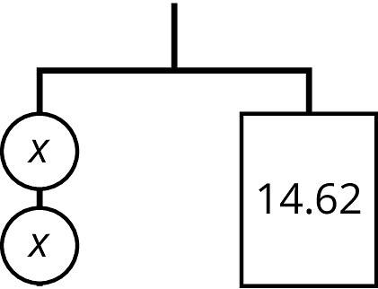

Hanger diagrams g6_equations_hanger_diagrams
- skill partial
- given find partial
- range partial
- variance partial
- graphic close
- hard same topic close
Some published cards are a different task from the generated question, so the skill does not fully line up. The stem prints the equation and also says to use the diagram, so a student can ignore the figure. The published figure task makes the figure the only place the relationship is written. Generated numbers grow (max about 3 → 5), while the published hard items change form or context more than the size of the numbers. All generated stems share one template. The published sample has 3 distinct stems. Both sides use a figure. Compare the published images with the generated drawings for the same kind of object (what is labeled, what is given, and how many variants appear). Published figure notes include: a balance shows two x's on one side and 14.62 on the other side; A balance showing one x and two ones on one side and 5 ones on the other side. Hard does not switch to a different method. Extra fractions, negatives, or larger coefficients count as earlier skills, not a new topic.
In topic, not generated: select the equations that match the diagram; write the equation that the diagram shows. Generated: solve the equation shown by the diagram.
Open Up Resources Grade 6 (Illustrative Mathematics) · exercise ladder · match strong · CC BY 4.0 (Open Up Resources and Illustrative Mathematics) · consulted 2026-11-19
Grade 6 Unit 6 Lesson 3: Staying in Balance
https://access.openupresources.org/curricula/our6-8math/en/grade-6/unit-6/lesson-3/index.html
easy
Published
Generated
medium
Published
Write an equation to represent the hanger. Explain how to reason with the hanger to find the value of x . Explain how to reason with the equation to find the value of x .

Generated
hard
Published
Andre says that x is 7 because he can move the two 1s with the x to the other side. Do you agree with Andre? Explain your reasoning.

![There are 5 histograms labeled A, B, C, D, and E. Each histogram has a horizontal axis with 0 through 50, in increments of 5, are indicated. The vertical axis has 0 through 12, in increments of 2, indicated. The height of the bars for “histogram A” are as follows: from 5 up to 10, 6; from 10 up to 15, 8, from 15 up to 20, 8; from 20 up to 25, 2; from 25 up to 30, 1. The height of the bars “histogram B” are as follows: from 30 up to 35, 2; from 35 up to 40, 11; from 40 up to 45, 7; from 45 up to 50, 5. The height of the bars for “histogram C” are as follows: from 0 up to 5, 3; from 5 up to 10, 1; from 10 up to 15, 2; from 15 up to 20, 0; from 20 up to 25, 5; from 25 up to 30, 7; from 30 up to 35, 0; from 35 up to 40, 1; from 40 up to 45, 4; from 45 up to 50; 2. The height of the bars for “histogram D” are as follows: from 20 up to 25, 2; from 25 up to 30, 9; from 30 up to 35, 11; from 35 up to 40, 1; from 40 up to 45, 1; from 45 up to 50, 1. The height of the bars for “histogram E” are as follows: from 5 up to 10, 3; from 10 up to 15, 2; from 15 up to 20, 8; from 20 up to 25, 3; from 25 up to 30, 4; from 30 up to 35, 3; from 35 up to 40, 2.](assets/img/remote/dcc9a17ab5cfa2ef.png)
![There are five dot plots labeled "1", "2", "3", "4", and "5." Each dot plot has the numbers 0 through 50, in increments of 5, indicated. The data for “dot plot 1” are: 31, 1 dot; 34, 1 dot; 35, 2 dots; 36, 2 dots; 37, 3 dots; 38, 1 dot; 39, 3 dots; 41, 1 dot; 42, 2 dots; 43, 3 dots; 44, 1 dot; 45, 2 dots; 46, 1 dot; 47, 2 dots. The data for “dot plot 2” are: 20, 1 dot; 23, 1 dot; 25, 2 dots; 26, 1 dot; 27, 3 dots; 29, 3 dots; 31, 5 dots; 33, 2 dots; 34,4 dots; 36, 1 dot; 41, 1 dot; 48, 1 dot. The data for “dot plot 3” are: 5, 1 dot; 6, 2 dots; 7 two dots; 8, 1 dot; 10, 1 dot; 11, 1 dot; 12, 1 dot; 13, 3 dots; 14, 2 dots; 15, 2 dots; 17, 3 dots; 18, 3 dots; 21, 1 dot; 23, 1 dot; 30, 1 dot. The data for “dot plot 4” are: 9, 3 dots; 13, 1 dot; 14, 1 dot; 15, 1 dot; 16, 1 dot; 17, 3 dots; 18, 1 dot; 19, 2 dots; 20, 1 dot; 21, 1 dot; 22, 1 dot; 26, 1 dot; 27, 3 dots; 30, 1 dot; 32, 1 dot; 33, 1 dot; 35, 1 dot; 36, 1 dot. The data for “dot plot 5” are: 3, 1 dot; 4, 2 dots; 6, 1 dot; 11, 1 dot; 13, 1 dot; 21, 1 dot; 22, 2 dots; 24, 2 dots; 25, 2 dots; 26, 1 dot; 27, 1 dot; 28, 1 dot; 29, 2 dots; 36, 1 dot; 40, 1 dot; 42, 1 dot, 44, 1 dot; 46, 1 dot; 50, 1 dot.](assets/img/remote/3973e816e89f28ff.png)
![A histogram: The horizontal axis is labeled “length in feet” and the numbers 13 through 17.5, in increments of 0.5, are indicated. On the vertical axis the numbers 0 through 10, in increments of 2, are indicated. There are tick marks midway between. The data represented by the bars are as follows: Length from 13 up to 13.5, 1 Length from 13.5 up to 14, 1 Length from 14 up to 14.5 , 4 Length from 14.5 up to 15, 10 Length from 15 up to 15.5, 10 Length from 15.5 up to 16, 9 Length from 16 up to 16.5, 10 Length from 16.5 up to 17, 4 Length from 17 up to 17.5, 1](assets/img/remote/9eb75664a53b8961.img)